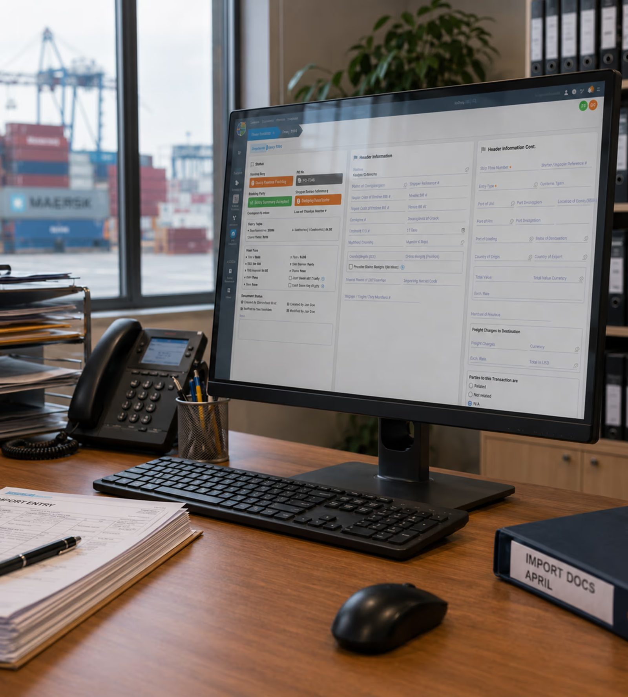
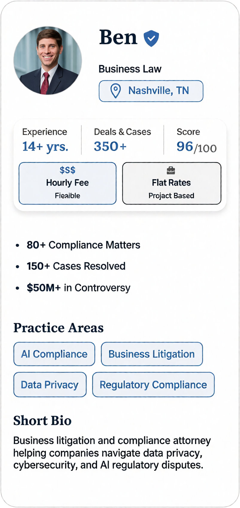
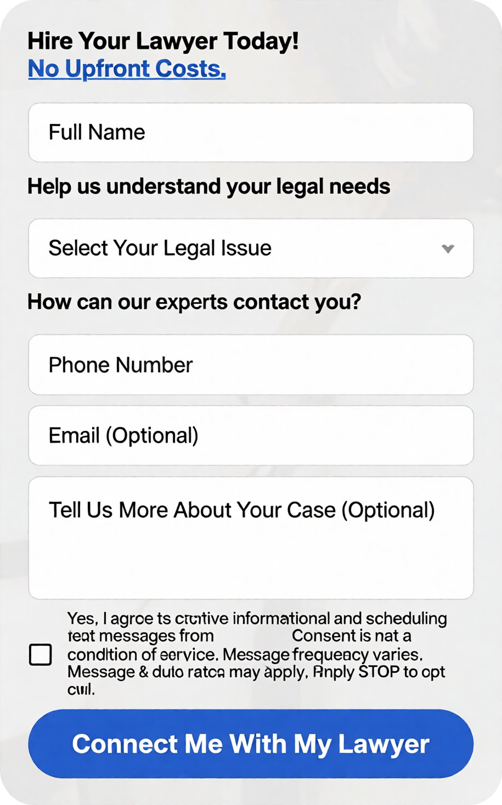
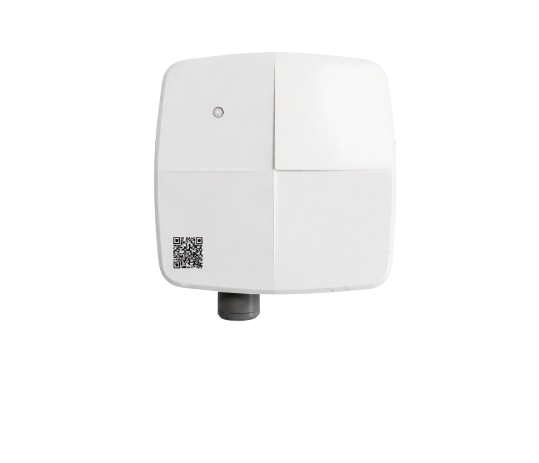
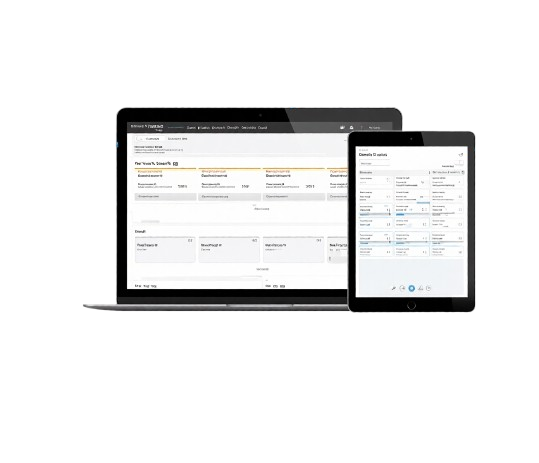

Most of my experience is focused on complex products within highly regulated U.S. markets (customs, legal tech, and pharmaceutical IoT). Using a Design Thinking approach, I dive deep into business logic, work closely with engineering, and constantly negotiate with stakeholders to turn strict technical and regulatory constraints into clear, consistent, and intuitive user experiences.
Below is a breakdown of my design process across three key projects, and an extra one from a different industry:
Note: Visuals are limited due to NDAs. Some figures are confidential, so I describe outcomes qualitatively.
The platform is a modular web application for a US-based company focused on customs brokerage and global trade compliance software. Each module handles distinct user flows, permissions, and role-based profiles.

The Design System arose to solve internal handoff challenges with the development team.
Roles & GoalsAs the platform scaled by adding new modules, development moved forward without UX intervention. Lacking a unified system, front-end developers had to make quick UI decisions to meet deadlines, creating a lot of design debt. This caused big visual and functional inconsistencies that only showed up during client demos. As a result, there was constant rework, extra maintenance costs, frequent "hot fix" Jira tickets, poor accessibility, and a fragmented product that looked unprofessional to clients and stakeholders.
Huge Reduction in Complexity: We went from more than 300 colors and 5 themes to just 45 structured tokens for Light and Dark mode.
Significantly improved accessibility by reducing the number of auto-generated themes and ensuring both Light and Dark mode meet WCAG AAA standards. Having only two clear themes made the platform much easier to use for people with visual impairments.
Front-end code became significantly more performant by eliminating duplicate, unused colors and obsolete auto-generated themes, translating into less CSS to maintain.
The new components ensured consistency across all modules, making the web app finally feel like a single, unified product.
We drastically reduced visual inconsistencies during client demos, which lowered the number of "hot fix" Jira tickets and rework on already approved designs, thus saving time and costs.
Using the same token names in Figma and code meant design and development finally spoke the same language, saving developer hours and avoiding misunderstandings.
Customs regulations change frequently, and calculations depend on nested business logic that can go up to three levels deep. The existing solution was built with Kendo for Angular and felt like writing raw code. Even experienced administrators struggled to use it and needed constant technical assistance. If an admin made a mistake in the logic or overlapping rules, brokers would calculate taxes incorrectly, exposing clients to operational risks, severe customs penalties, and financial fines.
Administrators can now build and edit nested logic without technical training or developer assistance.
Customs brokers can select pre-built rules confidently, filling out forms faster.
Significantly reduced operational and compliance risks, helping prevent costly regulatory fines.
Continuous alignment with engineering meant the feature integrated smoothly into the platform without complex and custom component rework.
While we added instant error states to prevent contradictions between rules, tax calculations can be very intricate. Looking back, I would have loved to add a "test run" or preview tool where administrators could input sample values to verify the final calculation before publishing the rule to brokers.
The product is a legal marketplace web platform connecting clients with specialized U.S. lawyers through a curated matching service run by paralegals.


Finding a lawyer in the U.S. is stressful, expensive, and overwhelming. Big firms are often unaffordable, while smaller, qualified practices remain invisible to regular people. Because this was an early-stage startup without brand recognition, users hesitated to share sensitive personal and legal information on an unfamiliar platform.
The challenge was building immediate credibility, communicating the value of an assisted match, and guiding distressed users through an intake form without making them feel interrogated, all while defining and validating an MVP that hadn't been scoped before work began.
When we joined the project, substantial resources had already been poured into building unused features without testing the core premise. We had to tackle both challenges in parallel.
More people visited and spent time looking at the lawyer profiles on the site, which we verified with Microsoft Clarity.
The clean layout and simple text helped users feel safe to share their legal needs.
The 5-field form was easy to complete and helped the team hit the MVP goal of getting at least 2 qualified leads every month.
The paralegal got clean, useful information, making it much faster to review each case and introduce the client to the right lawyer.
The product is a web platform for an IoT company that monitors storage conditions (like temperature and humidity) for 4 of the top 5 pharmaceutical companies in the U.S.


In the pharmaceutical industry, rules are strict legal regulations (like FDA compliance) where any incident can cost millions of dollars in spoiled medicine or failed audits. The legacy platform was cluttered with raw data and loud alerts, causing severe "alarm fatigue" for operators.
At the same time, our engineering team adopted AI tools and started developing at a much faster pace. Our traditional design handoff could not match that velocity. We faced a double challenge: redesigning a critical, zero-error monitoring system while completely modernizing our design delivery process so developers could iterate rapidly with AI without breaking compliance.
Operators can now identify critical alerts much faster, cutting down response time during sensitive temperature incidents.
The guided action workflow reduced human errors when logging incident resolutions, helping meet strict audit requirements.
The cleaner interface eliminated visual clutter and alarm fatigue, giving operators confidence during daily monitoring.
The new handoff artifacts and modular component specs allowed our AI-accelerated developers to build and deploy complex compliance screens without implementation bottlenecks.
The development team had a clear, modern framework to replace the legacy screens smoothly.
If I had to do this project again, I would set up shared design tokens from day one and bring developers into the design file much earlier. At the beginning, we lost time manually explaining colors, states, and spacing while their AI tools were already writing code. Having those tokens connected directly to their codebase and working together on early wireframes would have saved a lot of back-and-forth and helped us catch complex compliance rules even faster.
The product is a responsive web and mobile sportsbook extension integrated into an existing online gaming platform from Brazil.
View on BehanceSports betting platforms are usually overwhelming. They saturate users with flashing numbers, complex odds, and chaotic live updates. We had two main problems: first, this was not a brand-new standalone app; it was a vertical extension that needed to exist inside an existing gaming ecosystem without confusing current players and ensuring users could transition between the main platform and the new one without friction. Second, we needed to show a huge catalog of live matches and betting options without causing visual fatigue or cognitive overload for the user.
Successfully integrated a complex sportsbook into the existing gaming platform without disrupting the core user experience.
The state-driven bet slip eliminated confusion and built user trust by providing clear, transparent feedback for both single and accumulator bets.
The high-contrast palette gave the brand a strong personality and helped it stand out immediately from other betting sites.
The new, balanced palette also reduced cognitive load and visual fatigue during live betting sessions, where numbers and odds change in fractions of a second.
Delivered a future-proof, scalable component library that developers could reuse easily as the sportsbook catalog expanded.